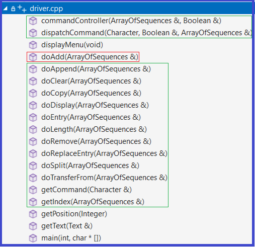
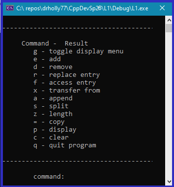

A Static Array of Sequences
| < > |
< "CSSE437"> |
<"CSSE230","CSSE477"> |
<"CSSE376","CSSE333"> |
<"CSSE220"> |
1. Command Interpreter Using an Array
Make a command interpreter that works with an array of Sequences instead of
just two Sequences. This permits the user at the keyboard to work with more than two
Sequences, and it actually reduces the amount of code in our command interpreter.
Even in today's world of JUnit type testing, command interpreters come in quite handy for testing modules that are difficult to test using JUnit tests. Usually these modules are buried deep in a large application, and it is difficult to create JUnit tests that create the correct kind of test inputs.
Setup Steps:
|
For Steps 1 - 5 (below) reference the following web page Creating and building empty projects
- Create a new Visual Studio Empty Project, name the project L1 and make it subordinate to the csse373devenv202630-YourUserID repo folder
- Copy (don't move) 4 items from the csse373devenv202630-YourUserID/SeqDriver folder to the newly created L1 folder (created by VisualStudio in Step 1):
- driver.cpp
- TextSeq.h
- TestFolder - a folder
- TestScripts - a folder
- Add .cpp files to your project's Source Files folder:
- First add the driver.cpp (that you copied) to the project's Source Files folder
- Then add the wrapper folder (VS calls it a filter) and its subordinate .cpp files.
- Add a .h file to your project's Header Files folder:
- TextSeq.h
- When finished with this step, your project should look like the screen shot to the right.
- Change the project settings
- Build the project. If all steps up to this point were done correctly, it should build without any errors
- To run this program click: Debug | Start Debugging from the menu bar in Visual Studio
|
 |
Overview of What To Do:
- The driver.cpp that you copied from the SeqDriver folder is a client program of the Sequence4 component
- Both client program and Sequence4 component follow the Design by Contract approach where the client program is responsible for making sure that the precondition (requires clause) for the called operation (from the Sequence component) is satisfied prior to making a call. Also, the Sequence component's exported operations do not check to make sure that the client has called correctly, they are implemented with the assumption that the client has called with all preconditions satisfied.
- The client program in driver.cpp works with two Sequences, s1 and s2
- Your job is to modify each of the driver.cpp operations that currently work with s1 and s2 so that after modification it works with one variable which is a StaticArray of Sequences instead of two distinct sequence variables
To Do Specifics:
- driver.cpp #include's TextSeq.h. You'll first modify TextSeq.h to make it create a StaticArray of Sequences (the code for this is below in Section 2.1)
- Then move on to main - see Section 2.2
- Then change all operations that end up being called by main, e.g., the commandController, dispatchCommand, the do operations, etc. - see Section 2.3
- Also, you must modify getIndex - see Section 2.4
2. Code Examples
2.1 - Creating a StaticArray of Sequences of Text
Use the following example as a guide to creating an Array of Sequences, make these changes in TextSeq.h
// Array of Sequence<Text>
// Date: 3/2026
#include "Sequence/Sequence4.hpp"
#include "StaticArray/StaticArray1.hpp"
// First create a named instance of Sequence that holds Text objects
typedef Sequence4<Text> TextSequence;
// No Magic Numbers allowed
// So use enum to give names to the array lower and upper bounds, and size
enum {lowerBound = 0, upperBound = 4, arraySize = 5};
// Create named instance called ArrayOfSequences, which is indexed from 0..4
typedef StaticArray1<TextSequence, lowerBound, upperBound> ArrayOfSequences; |
2.2 - Changes to main - the main below is ready to go, use it to replace L1's main in driver.cpp
int main (int argc, char*
argv[])
{
Boolean showMenu = (argc == 1);
ArrayOfSequences aS1;
commandController (aS1, showMenu);
wcout << "end program" << endl;
return 0;
} // end main |
2.3 - Changes to: commandController, dispatchCommand, and the do operations
- Below is the code for doAdd, replace driver.cpp's existing doAdd with the code below
- Pay attention to doAdd's parameters, many of the other operations are parameterized similarly
- The screenshot to the right shows the headers for all the operations including their parameters
- The operations inscribed by the green rectangles in the screenshot to the right must be modified to work with the ArrayOfSequences
- I recommend taking an incremental approach to making these changes (i.e., not a big bang approach)
- Use mutli-line comments, i.e., /* ... */, to comment out all the do operations except doAdd
- Change out the code for doAdd using the code below
- Proceed with updating the getIndex operation
- Then update the commandController operation
- Followed by the dispatchCommand operation.
When working on dispatchCommand comment out all the cases that make calls to the do operations that you commented out in #1 (above)
- Get the project to build and run with just the new doAdd
- Then, one at a time, work on the remaining do operations, e.g., doClear, doRemove, etc.
|
 |
void doAdd (ArrayOfSequences& aS)
// Note: the '&' after the ArrayOfSequences type name means 'pass by reference' in C++
{
Integer i, p;
Text x;
wcout << "Add to ";
i = getIndex(aS);
wcout << "At ";
p = getPosition(aS[i].length());
getText(x);
aS[i].add(p, x);
wcout << endl << "s[" << i << "].add(" << p << ", x); executed." << endl;
wcout << "x = " << x << endl;
} // doAdd |
2.4 - Changes to getIndex operation
Change getIndex (in driver.cpp) so that it requires the user to type in a
number that can legally index into the ArrayOfSequences, but not allow indices
outside the bounds of the array
- Change getIndex's header to so that it takes the array of Sequences as a parameter - you can see a legal call to getIndex in the doAdd example above
- In getIndex use StaticArray's getBounds operation to determine the number of
locations in the array, just in case we later decide to change the array size
Integer lowerB, upperB;
aS.getBounds (lowerB, upperB);
// use lowerB and upperB to tell the user what the bounds
are
// and to check to make sure the user supplied a good index
3. Testing
After a successful build, run your program by clicking Debug | Start Debugging from the menu bar in Visual Studio. This will bring up a window similar to the one to the right
You can test the program at least 2 different ways:
- Run the program and type in your commands at the command prompt to exercise each of the operations that were modified, e.g., doAdd
- The TestScripts folder contains numerous .txt files:
- Each .txt contains commands to be input into your command interpreter. They all work for the original SeqDriver implementation (which uses only two Sequences, s1 and s2).
- Instead of retyping commands each time you run your command interpreter, you can run it and then copy and paste these tests scripts into your command interpreter while its running - it will execute all the commands that you paste in
- If you utilize these test scripts, you'll need to first study them to understand what they are asking the command interpreter to do, and then modify some of them slightly to work with your command interpreter that uses an array of sequences. The ones that require modifying are the ones that work on two sequences, e.g., append, split, etc.
The TestFolder contains the following:
- L1Sol.exe which is a solution to this lab
- runScripts.bat which is Windows batch file which will run all the test scripts (one after another) on either L1Sol.exe, or your L1.exe
- To learn how to use runScripts.bat, navigate to this folder and read the AAAreadme.txt file and the code comments in runScripts.bat
- Note: You must make your L1.exe run exactly like L1Sol.exe.
In the Grading section below you will find out what is meant by exactly
|
 |
4. Grading
In the TestFolder folder is L1Sol.exe. This executable is my solution to L1.
Your submission will be graded by running various test scripts against your L1.exe and then using FC (a File Compare tool) to compare the output from your L1.exe against the output from L1Sol.exe. FC does a character by character comparison.
It's highly recommend that you do not try to use the eyeball method compare your L1.exe's output with the output from L1Sol.exe because FC detects all character differences, even whitespace differences. I recommend that you run both L1.exe and L1Sol.exe on the test scripts found in TestScripts, and compare the two outputs against each other using FC. You are finished when FC reports "no differences found".
See the Grading Rubric associated with the L1 Moodle assignment
5. Submitting the Assignment for Grading
- Follow VS2026 instructions for committing and pushing your L1 project to your GitHub Education CSSE373 repo
- Use the commit message "L1 final commit, ready for grading"